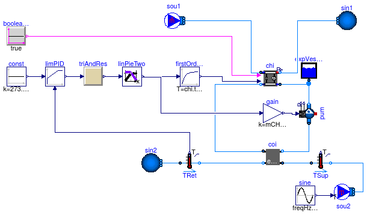
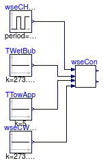

Test of components
This package contains examples for the use of models that can be found in Buildings.Examples.ChillerPlant.BaseClasses.Controls.
Extends from Modelica.Icons.ExamplesPackage (Icon for packages containing runnable examples).
| Name | Description |
|---|---|
| Test model for battery control | |
| Test model for chiller setpoint control using TrimAndResponse and LinearPieceWiseTwo | |
| Test model for ChillerSwitch | |
| Test model for KMinusU | |
| Test model for LinearPiecewiseTwo | |
| Test model for RequestCounter | |
| Test model for TrimAndRespond | |
| Test model for WSEControl |
 Buildings.Examples.ChillerPlant.BaseClasses.Controls.Examples.BatteryControl
Buildings.Examples.ChillerPlant.BaseClasses.Controls.Examples.BatteryControl
Test model for battery control

This model simulates a battery block controller.
Extends from Modelica.Icons.Example (Icon for runnable examples).
Buildings.Examples.ChillerPlant.BaseClasses.Controls.Examples.ChillerSetPointControl
Test model for chiller setpoint control using TrimAndResponse and LinearPieceWiseTwo

Extends from Modelica.Icons.Example (Icon for runnable examples).
| Type | Name | Default | Description |
|---|---|---|---|
| MassFlowRate | mAir_flow_nominal | 61.6*2 | Nominal mass flow rate at fan [kg/s] |
| Real | COPc_nominal | 3 | Chiller COP |
| MassFlowRate | mCHW_flow_nominal | 15.2 | Nominal mass flow rate at chilled water [kg/s] |
| MassFlowRate | mCW_flow_nominal | mCHW_flow_nominal/COPc_nomin... | Nominal mass flow rate at condenser water [kg/s] |
| Real | QRoo | 100 |
Buildings.Examples.ChillerPlant.BaseClasses.Controls.Examples.ChillerSwitch
Test model for ChillerSwitch

Extends from Modelica.Icons.Example (Icon for runnable examples).
Buildings.Examples.ChillerPlant.BaseClasses.Controls.Examples.KMinusU
Test model for KMinusU

Extends from Modelica.Icons.Example (Icon for runnable examples).
Buildings.Examples.ChillerPlant.BaseClasses.Controls.Examples.LinearPiecewiseTwo
Test model for LinearPiecewiseTwo

Extends from Modelica.Icons.Example (Icon for runnable examples).
Buildings.Examples.ChillerPlant.BaseClasses.Controls.Examples.RequestCounter
Test model for RequestCounter

Extends from Modelica.Icons.Example (Icon for runnable examples).
Buildings.Examples.ChillerPlant.BaseClasses.Controls.Examples.TrimAndRespond
Test model for TrimAndRespond

Extends from Modelica.Icons.Example (Icon for runnable examples).
Buildings.Examples.ChillerPlant.BaseClasses.Controls.Examples.WSEControl
Test model for WSEControl

Extends from Modelica.Icons.Example (Icon for runnable examples).